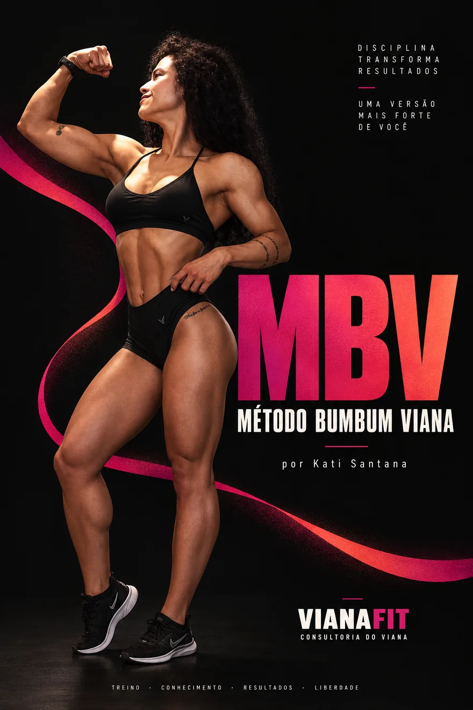
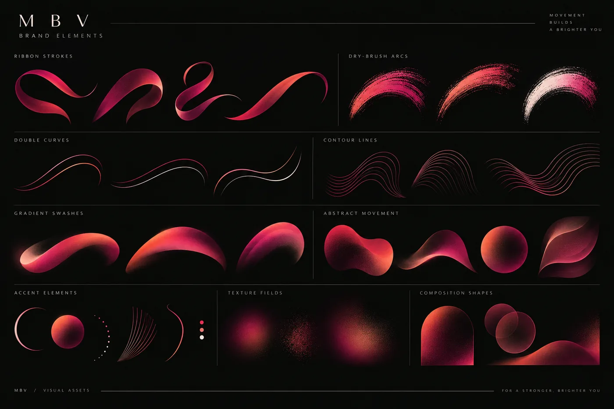

Case · Marketing Estratégico
MBV
Método Bumbum Viana
Um lançamento para conectar conteúdo, produto e relacionamento.

Cap. 01 · Contexto
Antes de pensar no lançamento,eu olhei para a jornada.
O briefing pede um plano completo de lançamento. Mas canais, calendário e automações só fazem sentido depois de responder três perguntas.
Papel no negócio
Que papel esse produto cumpre dentro do negócio?
Lugar na jornada
Como ele entra na jornada de quem já acompanha o Viana?
O que fica depois
O que precisa ficar construído depois que a campanha termina?
A partir daí, o lançamento deixa de ser uma sequência de posts e passa a ser um sistema.
Cap. 01 · Contexto
Os ativos já existem.A oportunidade está nas conexões.
A Consultoria do Viana já possui um ecossistema relevante. Minha leitura, a partir da experiência pública disponível, é que esses ativos ainda podem formar caminhos mais explícitos entre descoberta, relacionamento e produto.
Não é necessariamente criar mais canais. É tornar mais claro o próximo passo para quem já está dentro do ecossistema.
Ativos fortes. Oportunidade de conexão.
Cap. 01 · Contexto
Nem todo seguidor está prontopara uma Consultoria.
Mas ele pode estar pronto para fazer sua primeira compra do Viana.
Hoje existe uma distância natural entre conteúdo gratuito e acompanhamento totalmente personalizado. O MBV pode ocupar esse espaço com uma proposta:
- Específica
- De menor barreira
- Aplicável
- Conectada à metodologia
Não é uma jornada obrigatória. É uma arquitetura de possibilidades.
Papéis do MBV
Produto de entrada
Aquisição
De uma audiência com interesse específico.
Primeira conversão
Dentro do ecossistema.
Fonte de dados
Sobre dores, comportamento e intenção.
Cap. 01 · Contexto
O objetivo não é simplesmentevender um ebook.
Validar um produto de entrada que organize a jornada dessa audiência e aumente o valor do ecossistema da Consultoria.
Sell
Gerar vendas e validar disposição de compra por uma solução específica.
Learn
Descobrir quais dores, mensagens, segmentos e canais apresentam maior intenção.
Build
Deixar CRM, automações, conteúdo e baseline prontos para os próximos ciclos.
Vender. Aprender. Construir.
Cap. 02 · Produto

Ebook como núcleo.Método como experiência.
A referência enviada pela Consultoria reforça uma direção importante: o valor de um bom material de treino não está em listar exercícios. Está em organizar conhecimento técnico de forma que a pessoa consiga entender, aplicar e evoluir.
Por isso, o MBV deve ser estruturado em torno de seis blocos.
O problema
Por que um treino pode estagnar mesmo quando existe esforço.
Princípios
O que a Kati considera fundamental para um treino de glúteo bem estruturado.
Erros
O que costuma limitar execução e evolução.
Aplicação
Como pensar seleção, execução e organização.
Progressão
Como acompanhar se o treino realmente está evoluindo.
Prática
Exemplos, checklist, tracker e vídeos quando uma demonstração agrega clareza.
A estrutura técnica final será definida e validada pela Kati. Marketing é responsável por transformar o conhecimento em uma experiência clara, consumível e comercialmente forte.
Cap. 02 · Produto
Ela não precisa de maisum exercício salvo.
Precisa entender se está evoluindo.
Mulheres que já treinam, consomem conteúdo fitness e querem desenvolver glúteos, mas sentem que o resultado não acompanha o esforço colocado na academia.
“Quero parar de depender de exercícios aleatórios e entender o que preciso observar para saber se meu treino está evoluindo.”
Essa é uma hipótese inicial de ICP. O diagnóstico e os dados do lançamento servem para refiná-la.
Dúvidas que essa audiência carrega
“Será que estou usando o exercício errado?”
“Preciso treinar mais vezes?”
“Preciso aumentar carga?”
“Por que sinto outro músculo?”
“Como sei se estou realmente progredindo?”
Cap. 02 · Produto
Não é fazer mais glúteo.É fazer glúteo com método.
A categoria disputa atenção com
O território do Viana
MBV · Método Bumbum Viana
por Kati Santana
Cap. 02 · Produto
A experiência precisa valer maisdo que o formato “PDF”.
- Ebook principal
- Vídeos de apoio onde a demonstração for necessária
- Tracker de progressão
- Checklist de aplicação
Sem preencher o produto artificialmente com uma lista infinita de bônus.
Pricing · hipótese de planejamento
Pricing é uma hipótese. Deve ser validado por conversão, percepção de valor, comportamento de checkout e feedback dos primeiros compradores.

Arquitetura de produto
Cap. 03 · Go-to-market
Always-on na base.Picos de atençãoquando fizer sentido.
Eu não trataria o MBV como um produto que aparece durante uma semana e desaparece.
Always-on
Conteúdo, SEO, diagnóstico, CRM e venda contínua.
Acelerações
Campanhas sazonais que aumentam relevância e urgência real. Por exemplo, uma Edição Verão.
O lançamento gera pico. O sistema transforma o pico em aquisição contínua.
Cap. 03 · Go-to-market
Go-to-market em três movimentos.
Estruturar a oferta
Semanas 1–2Objetivo: ficar pronto para vender e medir.
- Product Brief
- ICP inicial
- Proposta de valor
- Arquitetura do produto
- Pricing hypothesis
- Landing page
- CRM taxonomy
- Tracking
- ManyChat
- Sistema visual
- Backlog de conteúdo
- Briefing e workshop técnico com a Kati
Lançar e validar
Semanas 3–6Objetivo: gerar atenção, vendas e aprendizado.
- Campanha editorial
- Diagnóstico MBV
- Captação
- Nurture
- Newsletter
- Cluster de blog
- Conteúdos com a Kati
- Sequência comercial
- Early access
- Lançamento
- Leitura diária de feedback e comportamento
Escalar e otimizar
Semana 7+Objetivo: transformar o lançamento em máquina.
- Onboarding
- Análise de cohort
- Otimização de LP
- Testes de copy
- Conteúdo evergreen
- Segmentação
- Nurture permanente
- SEO
- Recuperação de não compradores
- Oportunidades de cross-sell
- Post-mortem
- Baseline para o próximo ciclo
Cap. 03 · Go-to-market
Um ecossistema.Funções diferentes.
Gerar atenção e intenção.
ManyChat
Transformar intenção em conversa.
CRM
Criar memória sobre a audiência.
Desenvolver interesse e recuperar intenção.
Blog
Capturar demanda de busca.
Newsletter
Criar recorrência de relacionamento.
App
Intervir em momentos de alta relevância.
Landing page
Explicar e converter.
Pós-compra
Ativar e abrir o próximo passo.
Os canais não formam campanhas independentes. Eles formam uma jornada.
Cap. 03 · Go-to-market
Quatro experiênciasque precisam funcionar.
Cap. 04 · Conteúdo
O conteúdo muda conformeo estado mental da audiência.
Diagnóstico
Fazer a pessoa perceber um problema.
“Seu treino de glúteo evoluiu ou só mudou?”
Educação técnica
Explicar o mecanismo.
“Sentir queimar significa que está funcionando?”
Aplicação
Transformar conceito em ação.
“O que observar antes de trocar um exercício.”
Autoridade da Kati
Aproximar a especialista do público.
“Como a Kati avalia um treino de glúteo.”
Prova · casos
Reduzir risco.
Produto
Tangibilizar o MBV e converter.

No aquecimento: predomínio de problema, educação e especialista.
No lançamento: aumenta produto, prova e objeção.
Cap. 04 · Conteúdo
A campanha é uma narrativa.Não uma sequência de ofertas.
“Seu treino evoluiu ou só mudou?”
Objetivo: consciência do problema.
CTA: salvar e comentar.
Enquete: “Você registra carga e repetições?”
Objetivo: research e engajamento.
“5 sinais de que seu treino está no piloto automático.”
CTA: compartilhar e salvar.
“Sentir queimar significa que está funcionando?”
Diagnóstico MBV
CTA: “Comente MBV.”
Principais resultados e dúvidas do diagnóstico
“O que a Kati observa antes de mudar um treino.”
Qual variável você menos acompanha?
“Por que mais exercícios podem não resolver seu problema.”
Kati analisa um treino fictício
Desenvolvimento do MBV
FAQ e caixa de perguntas
Primeiro acesso para leads mais quentes
“Treinar glúteo é fácil. Saber se você está evoluindo é outra história.”
“O que existe dentro do MBV.”
“MBV é para você?”
Conteúdo técnico conectado ao método
Encerramento do preço promocional
“O MBV continua. O preço de lançamento não.”
Cap. 04 · Conteúdo
Marketing estrutura a narrativa.A Kati entrega o conhecimento.
Não entregar um texto de 400 palavras para a especialista decorar. Criar um Content Brief.
Hook
Uma pergunta ou contraste que capture atenção.
Explicação
A resposta direta.
Razão
O princípio técnico que explica a resposta.
Aplicação
O que a pessoa deve observar no próprio treino.
O próximo comportamento esperado de quem assistiu.
Template de brief

Cap. 04 · Conteúdo · Artefato

“Sentir queimar significa que o exercício está funcionando?”
Direção de resposta
Não necessariamente. A sensação durante uma série é uma informação, mas sozinha não permite avaliar a qualidade de um treino.
A Kati olha para um conjunto maior: execução, amplitude, controle, progressão e o papel daquele exercício dentro da sessão.
O ponto não é perseguir uma sensação. É criar o estímulo certo e conseguir evoluí-lo ao longo do tempo.
“Quer descobrir como está estruturado o seu treino? Comente MBV.”
Exemplo de direção de conteúdo. Não é uma prescrição técnica fechada: a validação final é da Kati.
Cap. 04 · Conteúdo · Artefato
Seu treino
de glúteo
evoluiu ou
só mudou?
A diferença entre trocar exercício e progredir de verdade.
VianaFitLegenda
Seu treino de glúteo evoluiu ou só mudou?
Trocar exercício dá sensação de novidade. Mas novidade e evolução não são a mesma coisa.
Se a pessoa não acompanha carga, repetições, amplitude ou qualidade da execução, fica difícil saber se aquele treino realmente avançou ou apenas ganhou uma nova lista de movimentos.
Esse é um padrão que a Kati observa com frequência: o exercício muda antes de existir tempo suficiente para entender se ele estava funcionando.
O ponto não é manter tudo para sempre. É saber por que algo entra, o que deveria entregar e qual critério será usado para decidir quando mudar.
É aí que progressão deixa de ser uma ideia abstrata e passa a orientar o treino.
O time do Viana preparou um diagnóstico rápido para ajudar a identificar como o treino de glúteo está estruturado.
Comente MBV para receber.
Cap. 05 · Relacionamento
O comentário é só o começo.
A usuária comenta MBV, ou acessa o diagnóstico pelos Stories, pela bio ou pela landing page.
O que o CRM passa a guardar
O lead deixa de ser nome e e-mail. Passa a carregar contexto.
Cap. 05 · Relacionamento
Automação não é disparo.É progressão de relacionamento.
Comentou MBV
Entra no diagnóstico.
Completou o diagnóstico
Deixa o e-mail e entra na base.
Recebe contexto
Resultado, educação e metodologia.
Visitou a landing page
Segmentação de interesse.
Iniciou o checkout
Entra em recuperação.
Purchase = true
Sai imediatamente da comunicação comercial e entra no onboarding.
Continua na base
Segue no nurture evergreen.
Cap. 05 · Relacionamento
Cada mensagem precisa justificara próxima interação.
Seu resultado no teste MBV
Entrega.
Seu treino muda ou progride?
Problema.
O erro que parece evolução
Educação.
Como a Kati avalia um treino de glúteo
Autoridade.
Do princípio à aplicação: conheça o MBV
Produto.
MBV está disponível
Não é uma lista de exercícios
O que existe dentro
Para quem o MBV faz — e não faz — sentido
O preço de lançamento termina hoje
Regras de segmentação
App · push seletivo
- Early access
- Abertura
- Último dia
- Pós-compra: “Seu MBV está disponível. Veja como começar.”
A implementação final deve respeitar as capacidades reais do app, ainda a validar.
Cap. 05 · Relacionamento · Artefato
Seu treino muda ou progride?
O segundo e-mail do nurture não vende. Ele instala a pergunta que o produto vai responder e prepara a autoridade da Kati para os conteúdos seguintes.
Seu treino muda ou progride?
Trocar um exercício é fácil. Saber se aquele exercício está produzindo evolução exige outra coisa.
Se a pessoa não sabe qual carga usou algumas semanas atrás, quantas repetições conseguia fazer ou o que deveria estar melhorando agora, cada treino começa praticamente do zero.
É por isso que progressão não é simplesmente colocar mais peso na barra. É conseguir acompanhar o que está mudando na execução e no desempenho ao longo do tempo.
Nos próximos conteúdos, a Kati vai mostrar quais variáveis ela observa quando avalia um treino de glúteo.
Ver o conteúdoCap. 06 · Newsletter & SEO
O lançamento entra na newslettercomo conteúdo.
Não como takeover comercial.
Seu treino muda ou progride?
Criar consciência. O produto não é mencionado.
Os erros que mais aparecem em treinos de glúteo
Educação. CTA para o diagnóstico.
Como a Kati avalia um treino de glúteo
Autoridade e teaser.
Não é fazer mais glúteo. É fazer com método.
Apresentar o MBV.
O que o diagnóstico MBV mostrou sobre como as pessoas treinam
Transformar dados proprietários em conteúdo proprietário.
Os números só entram nessa edição depois de existirem dados reais. Nenhum percentual é estimado antes disso.
Cap. 06 · Newsletter & SEO
Conteúdo de lançamento hoje.Aquisição orgânica amanhã.
Treino de glúteo: guia completo para hipertrofia
Capturar demanda ampla e organizar o cluster inteiro. Categoria: Treino.
Arquitetura do cluster
Instagram gera pico. SEO continua encontrando pessoas depois que a campanha termina.
Cap. 07 · Operação
Processo antes de improviso.
Marketing define
Objetivo, pauta, formato e etapa do funil.
Kati valida
Tese, precisão técnica e limites.
Marketing fecha
Roteiro, shot list e CTA.
Gravação em lote
Primeiro corte do videomaker
Feedback consolidado e finalização
Publicação
Performance e aprendizados entram no backlog
Esse pipeline vale para conteúdo planejado. Demandas contextuais podem seguir um fluxo reduzido.
Cap. 07 · Operação
Pouco tempo da especialista.Máximo aproveitamentodo conhecimento.
Uma vez, no início
- Principais dores
- Dúvidas recorrentes
- Princípios técnicos
- Limites
- Arquitetura do conteúdo
Agenda fixa
- O que performou
- O que a audiência perguntou
- O que precisa de validação técnica
- O que será produzido na próxima semana
Gravação em lote
Preferência por uma sessão semanal ou quinzenal, dependendo do volume.
Um único documento
- Pauta
- Status
- Prazo
- Owner
- Aprovação
Marketing owns
- Estratégia
- Narrativa
- Calendário
- Copy
- Briefing
- Distribuição
- Performance
Kati owns
- Precisão técnica
- Conhecimento
- Validação
- Gravação
Cap. 07 · Operação
Briefing fechado antes da produção.
- Sistema visual MBV
- Capa digital
- Linguagem gráfica
- Templates-base
- Referências
- Necessidades de captação
- Desenho inicial do production day
- Ebook
- Checklist
- Tracker
- Lead magnet
- Wireframe e assets da LP
- Shot list
- Teste de linguagem
- Plano de B-roll
- Social templates
- Newsletter
- E-mail assets
- LP final
- Production day
- Reels
- Explicações e exercícios
- B-roll
- Materiais para Stories
- Launch kit
- Ads
- Resizes
- Variações
- Rough cuts
- Primeira rodada de cortes
- QA
- Versões finais
- Masters
- Exports finais

Regra de feedback
Um owner por entrega. Uma rodada consolidada por entrega. Nunca feedback contraditório de várias pessoas por WhatsApp.
Cap. 07 · Operação
Como seria operar isso toda semana.
Planejamento e prioridades.
Newsletter e produção editorial.
Gravação, produção e revisão.
Performance e otimizações.
Retro e backlog da próxima semana.
- Social listening
- CRM health
- Feedback de clientes
- Mensagens da audiência
Cap. 08 · Mensuração
O primeiro lançamento criao primeiro baseline MBV.
Aquisição
- Diagnostic starts
- Diagnostic completion
- Lead capture rate
- CPL, se houver mídia
Engajamento
- ManyChat completion
- Email CTR
- Story interaction
- Blog → lead
Conversão
- Lead → purchase
- LP → purchase
- Checkout → purchase
Negócio
- Compradores
- Receita
- Ticket
- Revenue per lead
- CAC e ROAS, se houver mídia
Qualidade
- Activation
- Refund
- Feedback e NPS quando aplicável
Expansão
- MBV → próximo produto
- MBV → Consultoria
Benchmarks externos não são meta definitiva. O primeiro lançamento estabelece o baseline próprio da Consultoria.
Cap. 08 · Mensuração
O relatório precisa responderquatro perguntas.
O que aconteceu?
Meta ou cenário contra o realizado.
Onde aconteceu?
Canal, conteúdo, segmento e etapa do funil.
Por que aconteceu?
Mensagem, comportamento, gargalo e oferta.
O que fazemos agora?
Keep o que escalar. Stop o que retirar. Test a próxima hipótese.
Números fictícios, usados apenas para mostrar a estrutura do relatório. Não representam dados da Consultoria do Viana.
Cap. 08 · Mensuração
Dado sozinho não muda resultado.Decisão muda.
O CTA ou a promessa do diagnóstico não estão fortes.
Benefício mais claro na chamada.
Problema de oferta, confiança ou percepção de valor.
Tangibilização e pricing.
Gargalo no onboarding ou na experiência pós-compra.
Fricção no diagnóstico.
Ou simplificar as respostas.
Cap. 09 · O que fica
O que performa vira infraestrutura.
O lançamento gera aprendizado. A infraestrutura mantém o crescimento.
Oportunidade futura · não é decisão deste lançamento
Se o modelo funcionar,o próximo produto não precisanascer de brainstorming.
O MBV pode se tornar o primeiro caso de uso de uma lógica maior de Product Discovery.
Sinais que alimentam a descoberta
- Buscas no blog
- Comentários
- DMs
- Respostas do diagnóstico
- Perguntas para especialistas
- Comportamento de e-mail
- Dados de compra
Priorização potencial
Somente depois de validar demanda faria sentido avaliar se esse sistema evolui para um guarda-chuva de produtos específicos.
Cap. 09 · O que fica
A oportunidade é transformarlançamento em ciclo.
Conteúdo
Gera audiência.
E alimentam novamente o ciclo.
O MBV vende agora.
Os dados ensinam.
O sistema fica.
O próximo ciclo começa mais inteligente que o anterior.